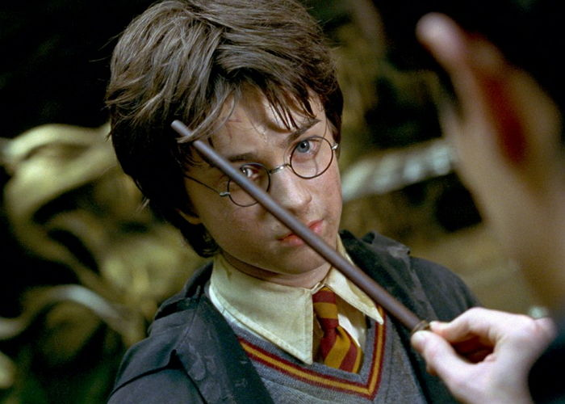

해리는 더즐리 집에서 편지 하나 없는 최악의 여름을 보내고 있었다. 이때 도비가 나타나 그에게 호그와트로 돌아가지 말 것을 경고했으나 도비가 자신의 편지를 가로챘다는 것에 분노해 무시했고, 결국 도비에 소행으로 마법부의 편지를 받아 더즐리 집 작은 방에 감금되는 수난을 겪는다. 하지만 4일 만에 친구인 론과 쌍둥이 형제 프레드와 조지의 도움으로 빠져나와 버로우로 떠남으로써 자유를 얻었다. 그리고 다이애건 앨리로 가던중 녹턴 앨리에 보진과 버크 가게에 떨어진 해리, 거기서 보진씨에게 무언가를 팔러온 말포이 부자(父子)를 본다. 겨우 가게를 빠져 나온 해리는 해그리드를 보고 놀란다. 다이애건 앨리에서 필요한 것을 사던 해리와 론과 헤르미온느는 나머지 책을 사려고 플러리쉬와 블러트 서점에 들어간다. 해리는 질데로이 록하트에게 사인을 받으려고 서있는 지니와 위즐리 부인 옆에 서다가 록하트 눈에 띄어 해리는 뜻 하지 않게 예언자 일보 제1면에 실린다. 그걸 질투한 말포이는 놀리는 말을 뱉는다. 결국 그것이 말포이씨와 위즐리씨에 싸움으로 번져, 서점은 엉망진창이 된다. 겨우 해그리드가 말려, 두 사람은 싸움을 멈추고 집으로 돌아간다. 호그와트로 갈 준비를 마치고 해리와 위즐리 형제들과 지니와 함께 킹스 크로스 역으로 간다. 하지만 호그와트로 가는 길에 갑자기 개찰구가 막혀, 결국 해리와 론은 날아 다니는 포트앵글리아를 타고 호그와트로 돌아왔지만 되받아 치는 나무에 추락하여 사태가 심각해진다. 겨우 퇴학 당하지 않고 돌아온 해리와 론은 버느나무를 치료한 스프라우트 교수가 상처를 입은 것을 보고 죄책감을 느낀다.
새로운 어둠에 마법 방어술 교수 질데로이 록하트는 해리의 말은 듣지 않고 판단해, 해리를 난처하게 만든다. 그러던 어느날 해리는 닉과의 약속으로 친구들과 함께 닉의 사망일 파티에 가고, 돌아오던 중 갑자기 들리는 소리를 따라가다 필치에 고양이가 죽은듯이 가만히 있는걸 본다. 필치가 해리를 발견하여 해리는 필치에 의심에 시달린다. 해리와 친구들은 말포이가 "후계자의 적들이여, 조심하라!흥, 다음은 어떤 잡종이 당할 차례일까?"라고 하는 말을 듣고 말포이를 의심해, 록하트 교수를 속여 사인을 받아낸 후, '폴리주스 마법약을 만들기 시작한다. 그날 슬리데린 팀 모두 최신형 빗자루 모델인 님부스 2001을 갖고 있는 불리한 상황에서 그리핀도르는 경기를 시작 한다. 하지만 한 블러저가 자꾸 해리만 공격하여 상황은 더욱 불리해진다. 결국 해리는 블러저에 맞아 오른팔이 부러진다. 하지만 해리는 스니치를 잡았고, 바로 기절한다. 해리가 깼을때는 아직도 운동장에 있었고, 록하트 교수는 해리의 팔을 고치려다, 오른팔의 뼈를 완전히 없에 버린다. 병동으로간 해리는 그날 밤 도비를 다시 만나게 되고, 개찰구를 막고, 블러저를 조작한게 도비라는 것을 알게된다. 그런 다음, 갑자기 덤블도어와 맥고나걸 교수가 들이 닥치고, 해리는 콜린이 습격 당했다는걸 알게 된다